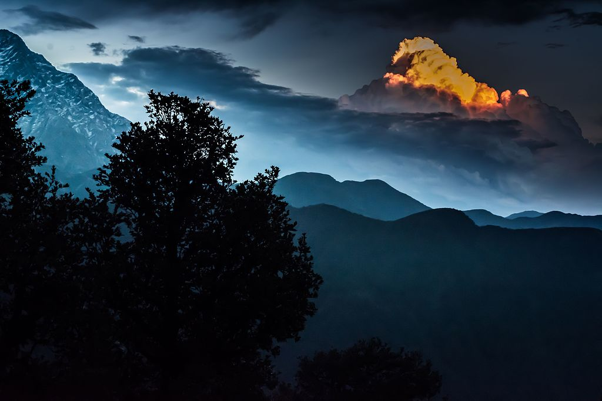
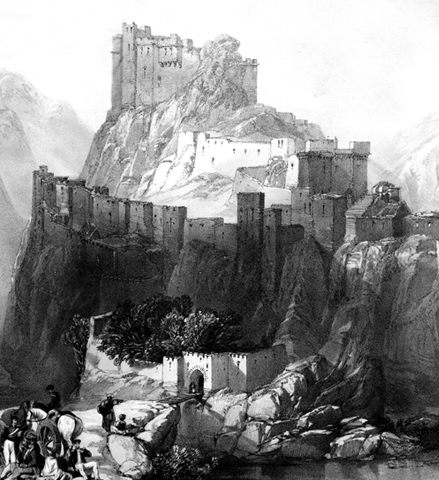
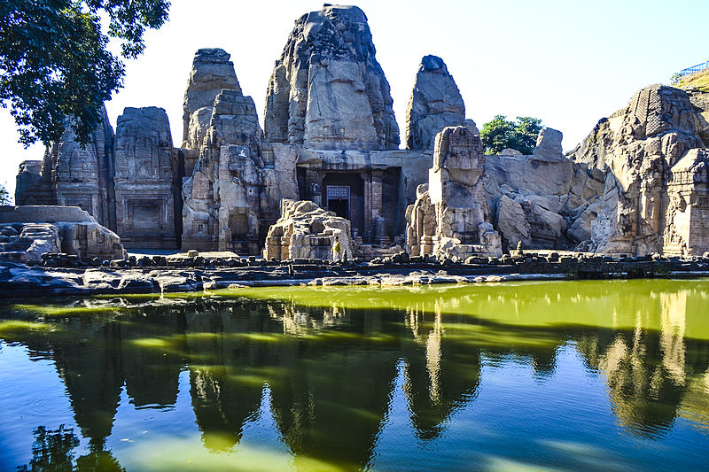
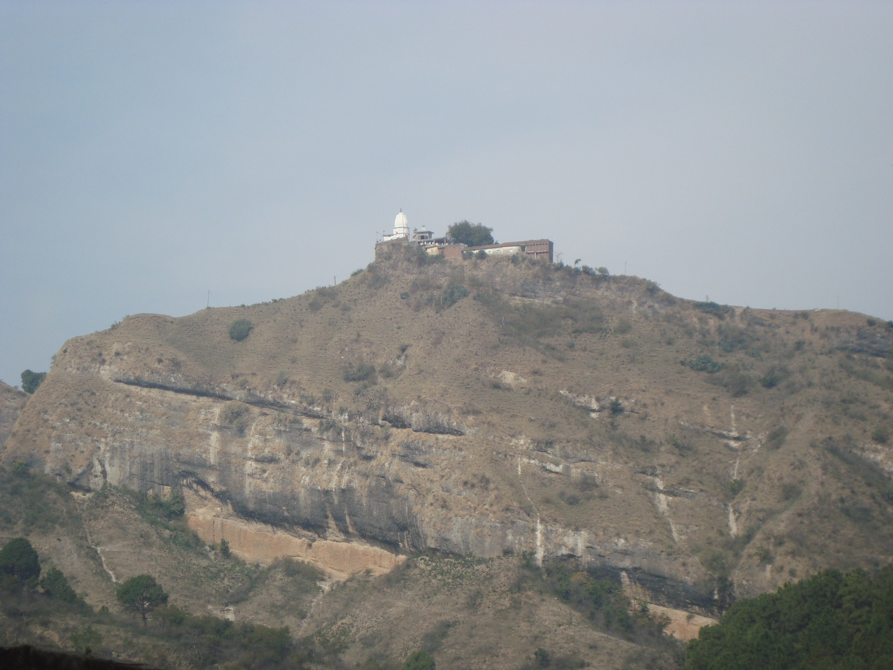

Kangra is the most populous district of the Indian state of Himachal Pradesh, India. Dharamshala is the administrative headquarters of the district. It is home of Masroor Rock Cut Temple, also known as Himalayan Pyramids and wonder of the world for being likely contender for the UNESCO World Heritage Site. Hindu genealogy registers at Jawalamukhi, Himachal Pradesh are kept here at Jawalamukhi. Kangra is known for having the oldest serving Royal Dynasty in the world Katoch.[citation needed] Kangra became a district of British India in 1846, when it was ceded to British India at the conclusion of the First Anglo-Sikh War. The British district included the present-day districts of Kangra, Hamirpur, Kullu, and Lahul and Spiti. Kangra District was part of the British province of Punjab. The administrative headquarters of the district were initially at Kangra, but were moved to Dharamshala in 1855.
Triund (Hindi; त्रिउंड) is a small hill in the Kangra district in the state of Himachal Pradesh, India. The Triund Hill Station is a part of Dharamkot. Triund is at the foot of the Dhauladhar ranges and is at a height of 2,828 m. Triund is a large land of green grass. One can see the mighty Dhauladhar ranges just above the eyes. The ridge elevation is between 2,810 and 2,875 metres. It is a one-day trek approx. 10 kilometres (one way) from Mcleod Ganj bus stand and under 6 kilometres (one way) from Galu temple near Dharamkot. The trail is rocky and cut in steps at some places. From Galu devi temple there is an unambiguous byway which goes through a beautiful forest of oak and devdar trees.
Triund is inaccessible in January and February due to heavy snowfall. The best time for the trekking is from March till May in the first part of the year and September till that the December in the second half of the year. It is Rainy in June and July but still trekking is possible the meadow is lush green presenting out of this world Triund Campsite is a base camp and acclimatisation point for trekkers climbing the Inderahara point in the Mt. Dhauladhar. For trekkers the view of the evening sky from Triund is a good enough reason to pitch a tent here for the night. The length of the trek makes it apt for a weekend.
The Kangra Fort was built by the royal Rajput family of Kangra State (the Katoch dynasty), which traces its origins to the ancient Trigarta Kingdom, mentioned in the Mahabharata epic. It is the largest fort in the Himalayas and probably the oldest dated fort in India. The fort of Kangra resisted Akbar's siege in 1615. However, Akbar's son Jehangir successfully subdued the fort in 1620.[1] Kangra was at the time ruled by Raja Hari Chand Katoch of Kangra (also known as Raja Hari Chand II)[2] Mughal Emperor Jahangir with the help of Suraj Mal garrisoned with his troops.
The Katoch Kings repeatedly looted Mughal controlled regions, weakening the Mughal control, aiding in the decline of Mughal power, Raja Sansar Chand II succeeded in recovering the ancient fort of his ancestors, in 1789. Maharaja Sansar Chand fought multiple battles with Gurkhas on one side and Sikh King Maharaja Ranjit Singh on the other. Sansar Chand used to keep his neighboring Kings jailed, and this led to conspiracies against him. During a battle between the Sikhs and Katochs, the gates of the fort had been kept open for supplies. The Gurkha army entered the opened scarcely armed gates in 1806. This forced an alliance between Maharaja Sansar Chand and Maharaja Ranjit Singh. Because of the insufficiency of the need within the fort after a long war and unable to procure any, the Gurkhas left the Fort. The Fort remained with the Katochs until 1828 when Ranjit Singh annexed it after Sansar Chand's death. The fort was finally taken by the British after the Sikh war of 1846.
The Masroor Rock Cut Temple or Himalayan Pyramid is a complex of temples located in Masroor (or Masrur) in Kangra Valley, which is 40 kilometres (25 mi) from Kangra city in Kangra district of the Indian state of Himachal Pradesh. It is now known as 'Thakurwada', meaning "Vaishnavite temples". It is a complex of monolithic rock cut temples, in shikhara (raising tower) style of classical Indian architectural style, dated by art historians to 6–8th centuries. Such an architectural style is unique to the northern part of India while there are many places in western and southern India where such rock-cut structures exist at number of locations. There is a lake or pond called Masroor lake in front of this edifice which shows partial reflection of the temples.
According to a popular legend, the Pandavas of Mahabharata fame resided here during their "incognito" exile from their kingdom and built this temple. During this time, as their identity and location was exposed, they shifted from here. This is said to be the reason for the unfinished part of the temple complex. The pond in front of the complex has a mythical link to Draupadi, the consort of the Pandavas. It is stated that it was built for her exclusive use for ablutions. The Masroor Rock Cut Temple, now known as Thakurwada, meaning "Vaishnavite temples", is the only such monolithic rock structure built in an improvised form of the Nagara style in northern India; as otherwise normally Nagara temples are built with brick. This architectural style is unique to the northern part of India while there are many places in western and southern India where such rock-cut structures exist at number of locations.
The story of the temple of Mata Jayanti Devi is the story of such a precious gift. The story goes back about 550 years, when the Mughals were ruling the country. At that time, a small estate called Hathnaur was situated at the north of present-day Chandigarh. The king of the estate had 22 brothers. One of the brother was married to the daughter of the king of Kangra in Himachal Pradesh. The girl was a great devotee of Mata Jayanti Devi — the mother goddess of the clan — since her childhood. Every morning she first used to worship the goddess and only after that she would perform other activities.
When her marriage was fixed she was very anxious because it meant going far away from her deity and not being able to have darshan of the goddess. She prayed hard and conveyed her grief and remorse to the goddess. Mata Jayanti Devi was moved by the deep devotion of the girl. She appeared in her dreams and promised to accompany her wherever she went. When the marriage party started back from Hathnaur with the bride’s doli, a miracle happened. Suddenly the doli turned very heavy. Neither the traditional kahars nor the king’s men could move it. At this, the bride told her father about her dream. The king, then, bowing to the desire of the divine arranged for another doli, kept the idol in it and sent the goddess with his daughter. The pujari and his family followed the goddess.continue reading